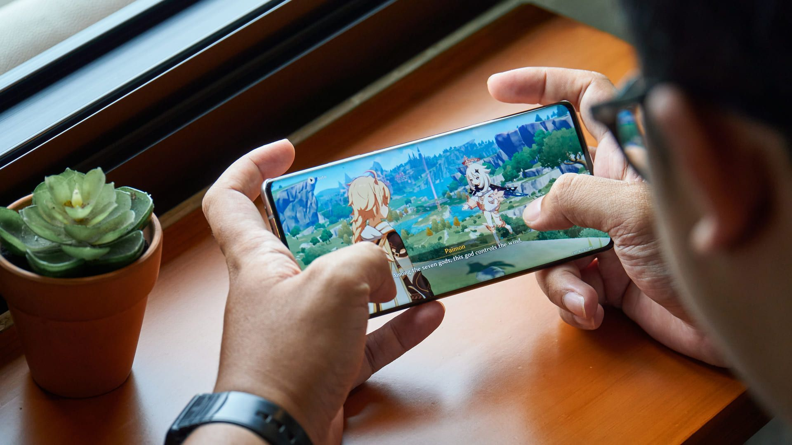
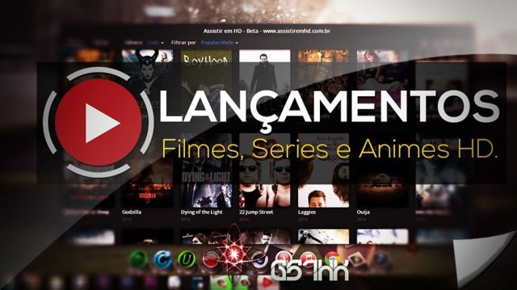
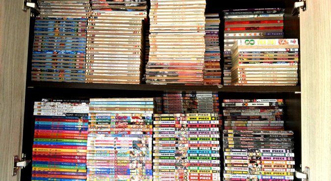

Meu nome é Bianca e eu irei falar um pouco sobre meus passatempos para vocês. Eu me considero uma pessoa bem simples então não tenho muito a dizer e meus passatempos são bem simples também mas é o que me diverte nos meus momentos de tédio. Mas vamos lá ver um pouco do que eu faço no meu tempo livre.
Escutar música:
Minha playlist é bem eclética e eu ouço praticamente de tudo, mas gosto principalmente de rock e música pop, eu não tenho uma única música favorita, eu gosto de tantas que nem consigo escolher hehehe
Jogar jogos online:
Os jogos que eu mais gosto são: Call of Duty, League of Legend e Genshin Impact. Gosto bastante de jogar com meus amigos e se deixar nós ficamos um dia inteiro só jogando kekeke
Assistir séries e animes:
Minhas séries favoritas são: The Walking Dead, Vikings e Supernatural. Atualmente estou assistindo Loki e recomendo muito que todos vejam, é muito bom. E sobre animes... Já assisti tanto que até perdi as contas, mas se você quiser uma recomendação vou citar alguns muito bons para assistir: Given, One Piece, Fullmetal Alchemist, Hunter x Hunter e Konosuba. Recomendei os mais famosinhos mas eles são tão bons que é impossivel não falar deles hihi
Ler:
Eu gosto muito de ler e gosto princioalmente de ler mangás e novels. Muitas pessoas geralmente não sabe o que são novels então eu vou deixar um pequeno texto explicando o que é:
Novels são normalmente direcionadas a um público mais adulto e muitas vezes “não otakus”, tanto que muitas Novels lembram livros normais como Crónicas do Gelo e Fogo, O Código Da Vince, ect. Apesar de “as vezes” terem capas coloridas, elas não costumam ter figuras de manga no meio das paginas, e quando tem não costuma ser nada parecido com o que se vê em mangas.
O texto acima eu tirei do site intoxianime.com que també explica o que são mangás entres outros.
No momento só tenho uma novels para recomendar, e eu vou te falar que essa foi a melhor obra que ja li até agora, o nome é A Will Eternal. Vai ler essa maravilha que é muito boa
Estudar:
Eu estudo sempre que tenho um tempo livre e até que é divertido! Atualmente estou estudando programação e ja fiz alguns projetos pequenos com o que eu aprendi, está tudo no meu github, meu nome no github está como Bianca-22, passa lá para dar uma olhada.
Então é isso, obrigada e volte sempre ;) <3